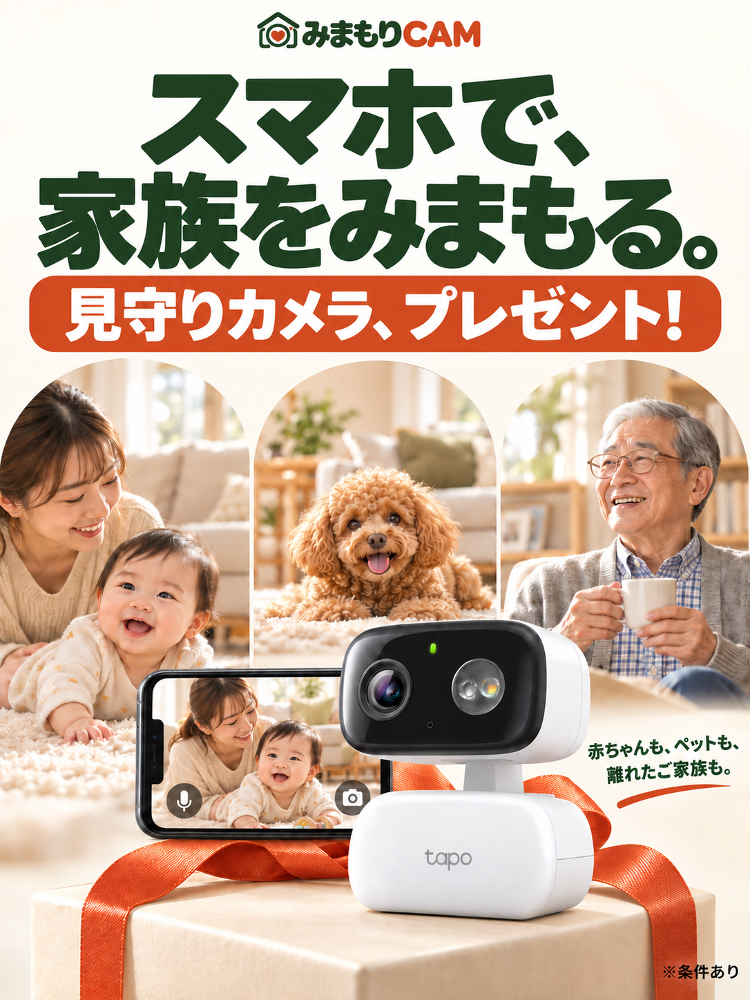
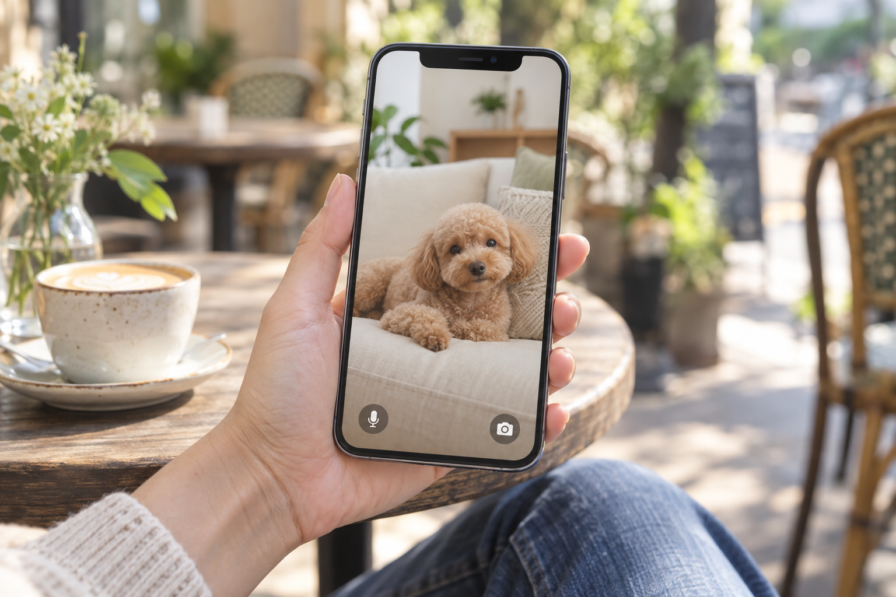
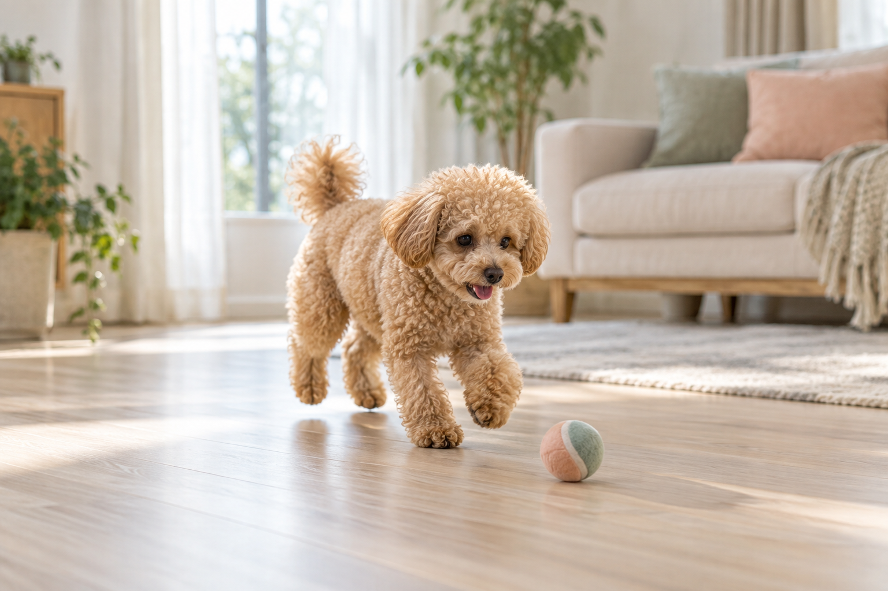
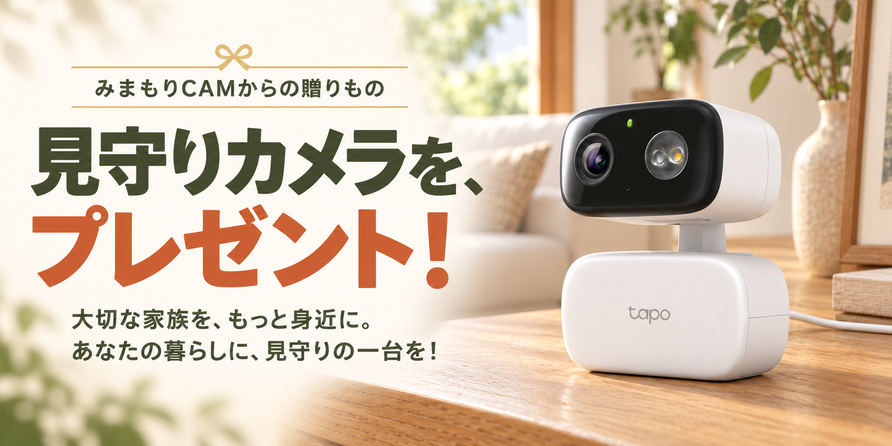
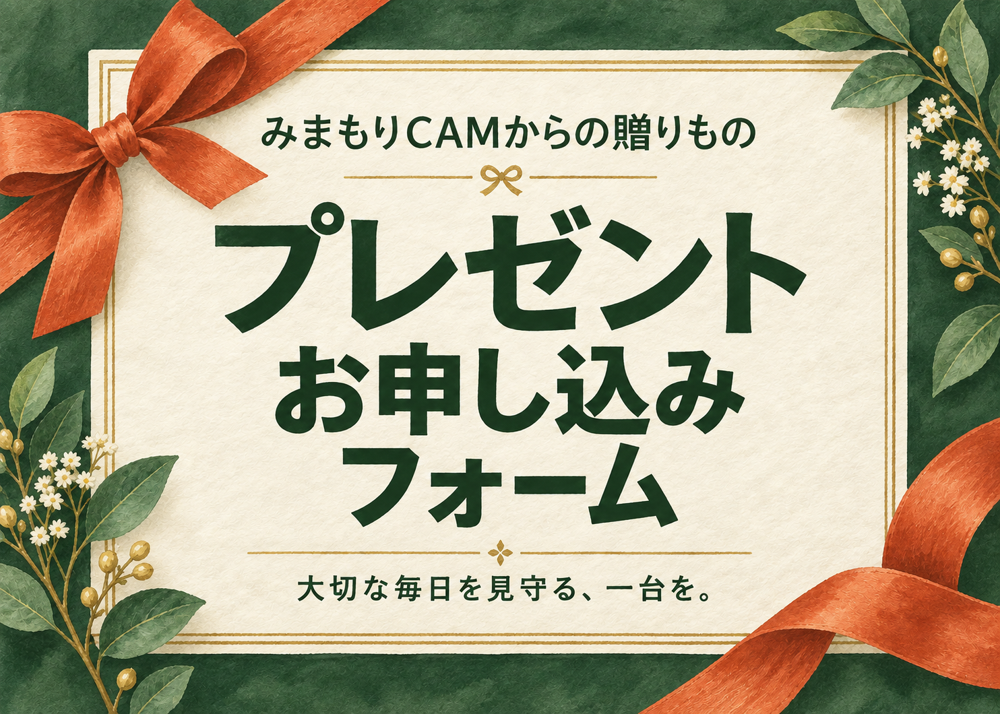

くっきり、見える。
お部屋の様子も、小さな表情も。
鮮明な映像で確認できます。


赤ちゃんも、ペットも、ご家族も。
気になるときに、スマホで。
ペットのお留守番に
お留守番の様子を、スマホで確認。離れていても、ほっとする。
カメラの映像で、普段の様子を確認できます。
お部屋の様子も、小さな表情も。
鮮明な映像で確認できます。
マイクとスピーカーを内蔵。
スマホから声を届けられます。

動きを見つけて、自動で追尾。
家族やペットの様子を見守ります。
画像は利用シーンのイメージで、実際のカメラ映像ではありません。機能情報：TP-Link公式製品ページ。利用環境や設定によって動作は異なります。


※条件あり電源・対応するネットワーク環境・スマホアプリの設定が必要です。設置場所で接続できるかご確認ください。
安定した棚や台に置いてください。本体やコードは赤ちゃん・ペットの手が届かない位置にし、転倒や引っ掛かりにもご注意ください。
保護者が近くにいる環境で、お昼寝の様子を確認する補助に使えます。直接の見守りや安全確認に代わるものではありません。
お留守番の様子を確認できます。いつもの居場所が映る位置に設置し、死角や接続状況にもご注意ください。
ご本人の同意を得てご利用ください。設置場所や見守る時間を話し合い、プライバシーに配慮しましょう。
スマホアプリから声を届けられます。接続・設定が必要で、聞こえ方は周囲の音や通信環境によって異なります。
対応するmicroSDカードやクラウドサービスに保存できます。カードの別途購入や、サービスの利用料金が必要になる場合があります。